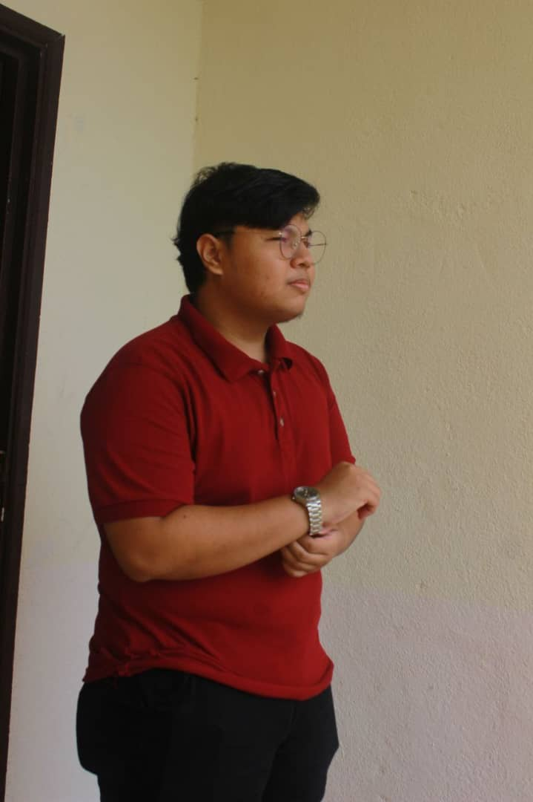

Muhammad Fahim Fitri Bin Masharudin, a 20-year-old individual with a passion for information system management, stands out as an ambitious and driven individual. With a degree in Information System Management, Fahim has equipped himself with valuable knowledge and skills in the field. He has also ventured into the world of work, having gained experience as a waiter. Through this role, Fahim has developed exceptional customer service skills and the ability to maintain a professional and efficient work environment.
Beyond the realm of academics and professional endeavors, Fahim finds solace and enjoyment in playing games. It serves as a means to unwind and engage in interactive entertainment. His dedication and enthusiasm shine through as he delves into the virtual realms, honing his strategic thinking and problem-solving abilities.
With a solid educational foundation, work experience, and a keen interest in gaming, Fahim is poised to make a positive impact in the information system management industry. His drive, coupled with a continuous thirst for learning, promises a bright future filled with growth and success.
